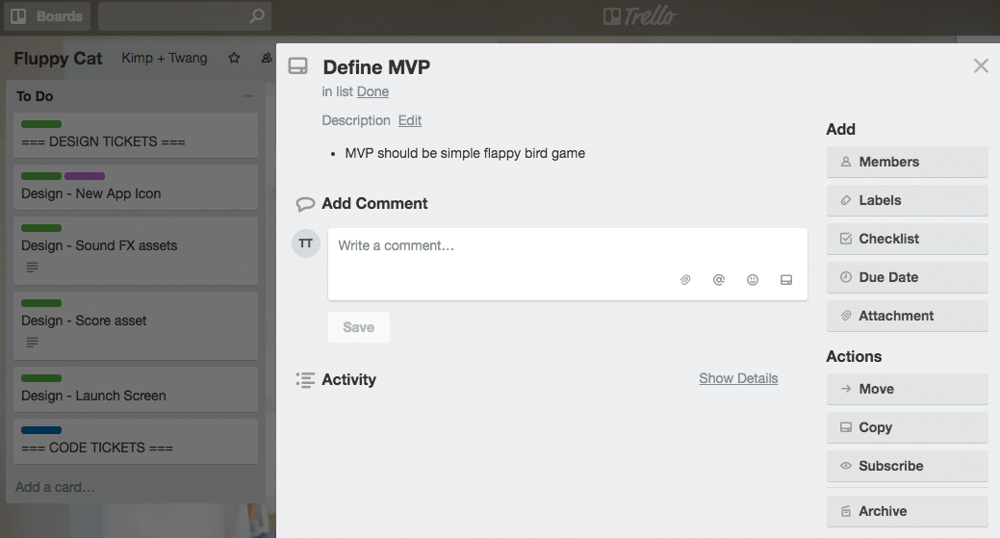
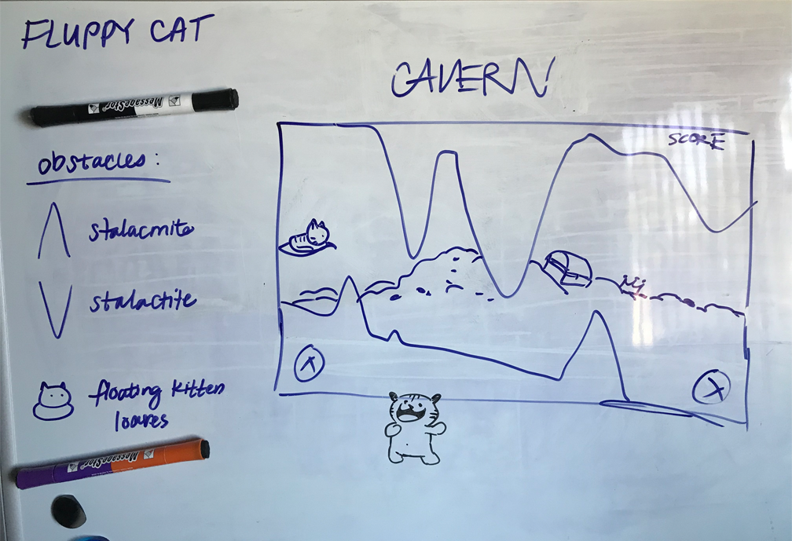
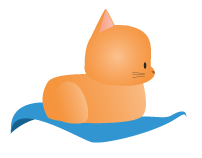

Fluppy Cat Mobile Game
POSITION
MOBILE/VISUAL DESIGNER
TOOLS & SKILLS USED
PHOTOSHOP - ILLUSTRATOR
OBJECTIVE
Everybody who knows me will tell you that I'm a passionate lover of cats. I'm always looking for new ways to bring my cat passion to life, so I teamed up with my boyfriend to make a mobile game. The game is called Fluppy Cat which is a paid tribute to Flappybird, the most addictive and frustrating game to reach our generation. Instead of controlling a bird to fly between Mario-inspired pipes, the user will tap the screen to direct a cat on a flying carpet. The goal is to accumulate points by collecting fishbone orbs in between crystal pillars. It's a nonsensical, whimically lovable game to test your patience.
APPROACH
My boyfriend and I brainstormed about the type of game we were shooting for. We wanted to create a very simple game with little effort needed to play. We liked the idea of a side-scrolling game, inspired by our experiences with predecessors like helicopter and Volcano Run from Neopets. The main protagonist would be a cat named Pibby and it would fly through a damp, dark cave collecting magical fishbone orbs. The goal is to see how many fishbone orbs one can collect without colliding into a crystal pillar.

After sorting out what tasks needed to be done, I set off to start on the visual assets of the game. These assets included: background, obstacles, the main sprite, the fishbone orbs, and a few other things. I had a clear vision of the background so I started on that portion first. The background is the most key component of the game because it does its part delivering the look and feel of the game. To keep it original, we went with something with dark colors to make the protagonist feel enclosed, as opposed to Flappybird's open environment.


The cat was going to be orange, and in a loafing position as it sits on the flying tarp. After coming up with the character design and testing it out, people said it didn't look like a cat—especially when it was scaled down in size.


The stalactite and stalacmite obstacles didn't work either. We tested that concept out and it was just too hard to see the very tips, and it made the game lag because the object was a triangle shape. I created crystal pillars instead, especially because it was consistent with the theme. The next step was to create the magical fishbone orbs.